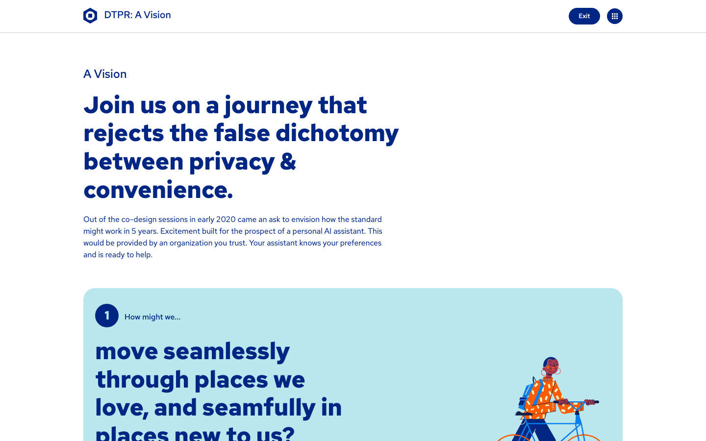
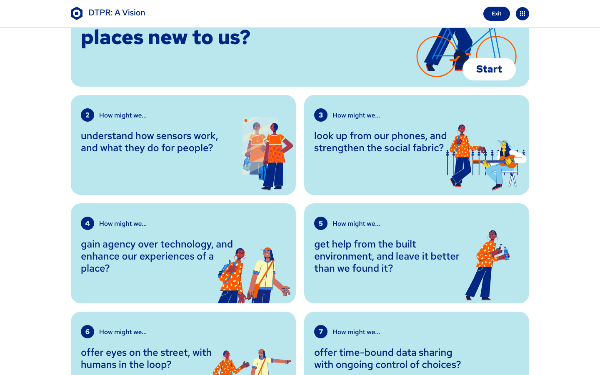
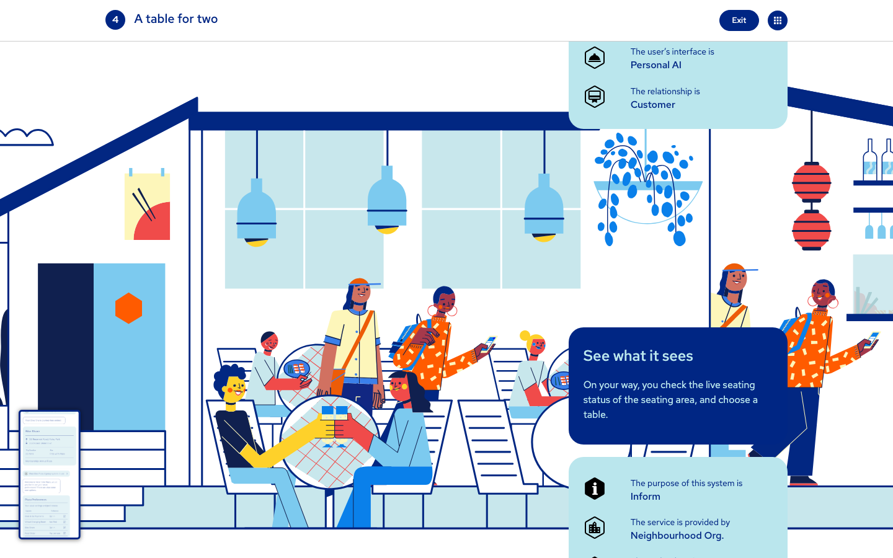

The 2020 co-design prototype
The origin of the hex mark, the data chain, the 147-element taxonomy, and the teal identifiability color. A speculative scrollytelling prototype from the Sidewalk Labs era. Now archival, but the most important source for the standard's actual visual language — the hex-based scenarios are the alternative the dtpr.io Corporate Memphis hero is competing against.
Hero / opening chapter

The seven "How might we..." questions

Scenario cards — the hex-based grammar

Mid-page — full design system in use

Source-code analysis
The vision.dtpr.io source is a 196KB main.css that contains the full Bootstrap v4.6.2 distribution plus a custom theme. The color tokens are:
From vision.dtpr.io/main.css :root block:
--blue: #002684; /* primary */
--indigo: #6610f2;
--purple: #6f42c1;
--pink: #e83e8c;
--red: #f04a4a;
--orange: #fd7e14;
--yellow: #ffc107;
--green: #0f5153; /* success, identifiability, .text-green */
--teal: #20c997;
--cyan: #17a2b8;
--secondary: #bae6ed;
--white: #fff;
--gray: #6c757d;
--gray-dark: #343a40;
--primary: #002684;
--success: #0f5153;
--info: #17a2b8;
--warning: #ffc107;
--danger: #f04a4a;
--light: #f8f9fa;
--dark: #343a40;
What the brand book should keep from vision.dtpr.io
The canonical hexagon mark
Three SVG variants (blue, black, outline) live at vision.dtpr.io/images/DTPR_Logo_*.svg. The blue solid is the default. See page 06 for analysis.
vision.dtpr.io/images/
The hex container grammar
The hexagon is not a logo — it is a container. dtpr_icons / container / hexagon.svg is the design-system primitive. Every scenario card is a stack of these. Every icon is one of these with content inside.
vision.dtpr.io SVG metadata
The teal identifiability color
#0f5153 is the "identifiability" semantic in the taxonomy. It also functions as a text and section accent on vision.dtpr.io. This is the original use of teal in the system — the dtpr.io teal section is a downstream adoption of this same token.
vision.dtpr.io Bootstrap vars
The pale-teal secondary
#bae6ed is the tonal pair to teal. Currently only used on vision.dtpr.io. The brand book should decide whether to keep this or replace it with the makeshift pale-blue #c2ddf5.
vision.dtpr.io Bootstrap vars
The three seals
Seal_Place, Seal_Sensor, Seal_System are 2020-era proposal assets. They read as context seals, not as the brand mark. Status: archival, kept for reference.
vision.dtpr.io/images/
The seven "How might we..." questions
Each chapter is a use-case for DTPR. Even if the scrollytelling mechanic is archival, the seven questions are a strong organizing principle for the standard's content strategy.
vision.dtpr.io scrollytelling
What the brand book should leave behind
- Horizontal-scroll scrollytelling. A 2020-era pattern that is now archival. Hard to navigate on mobile, no fallback, accessibility cost. The content can survive the pattern change.
- System-stack typography for body. Works as a fallback; not a brand choice. Red Hat Text (dtpr.io) or Source Sans (Makeshift) is a more deliberate choice.
- Minimal footer. No stewardship signature. The current dtpr.io footer is a clear improvement on this.